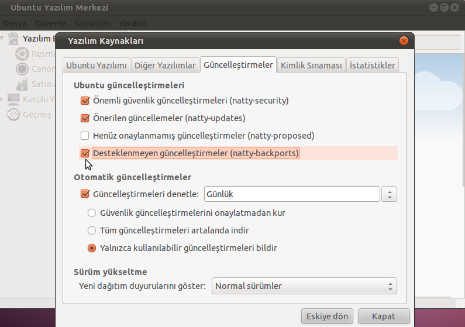
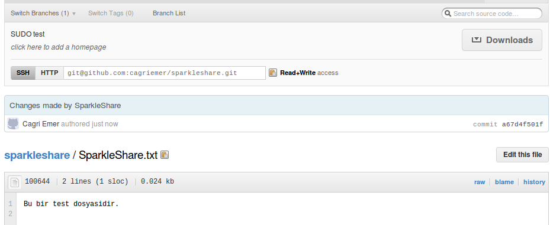
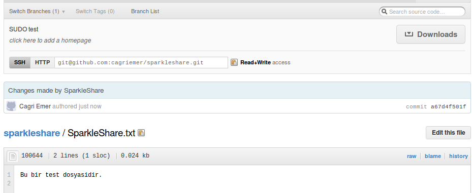

Bilgisayarların hayatımızın her alanında yer alması sonucu çoğumuz artık işlerini birden çok bilgisayar ya da bilgisayar benzeri tablet, akıllı telefon gibi cihazlar üzerinde hallediyor. Birden çok aracın kullanımı temelde işleri kolaylaştırıyor gibi görünse de kimi zaman hangi dosyayı nerede oluşturduğumuzu, son değişikliği nerede yaptığımızı hatırlayamıyoruz. Bu sorunun çözümü olarak kimimiz dosyalarını harici bir bellekte sürekli yanında bulundurmayı, kimimiz sunucusunda kimimiz de eposta adresinde saklamayı tercih ediyor. Peki ya çeşitli dosyalar üzerinde sadece biz değil de başkalarının da çalışması gerekiyorsa? Örneğin yazılacak bir proje raporunun sadece bir bölümünden siz sorumluysanız fakat diğerlerinin de ne yazdığını görmek istiyorsanız? İşte bu noktada devreye bulut bilişim giriyor. Hali hazırda var olan uygulamalardan Dropbox ve Ubuntu One sanırım bulut bilişim örneğinden en çok bilinen iki eşitleme servisi. Ben bu yazıda henüz daha çok tanınmamış fakat Dropbox ve Ubuntu One’a nazaran ziyadesiyle güçlü bir servis olan SparkleShare’i tanıtıp, kendi sunucumuzda ve GitHub entegrasyonu ile bu servisi nasıl kullanabileceğimizi anlatmaya çalışacağım.
Dosyaların zaman içindeki hallerinin, yetkisi olan herkesin erişebileceği bir sunucuda saklanarak kullanıcının istediği an dosyanın en güncel haline ulaşabilmesini sağlayan versiyon kontrol sistemlerinden bazılarını daha önce yazarak tanıtmaya çalışmıştık. Bu sistemlerin son kullanıcılar için en kötü yani, grafik arayüzleri olmadığından nispeten kullanmayı öğrenmelerinin biraz zaman istemesiydi. Zaten Dropbox ve Ubuntu One, arayüz işini kıvırabildikleri için bu kadar popüler oldular. Fakat onların da versiyon tutma gibi bir özellikleri yoktu. Bu eksikliği gören geliştirici Hylke Bons, grafik arayüz ile versiyon kontrolü birleştirdiği, arkaplanda git (mercurial seçeneği de mevcut) kullanan bir uygulama yaptı ve bu uygulamayı SparkleShare adıyla, GNU GPLv3 lisansı altında bizlerin kullanımına sundu.

SparkleShare Oneiric Ocelot ile depolarımızda olacak fakat Natty Narwhal üzerinde de backports deposunu etkinleştirerek uygulamayı yazılım merkezinden ya da eğer daha rahat ediyorsak apt-get ile kurmak mümkün.

Program ilk açıldığında karşımıza aşağıdaki gibi bir ekran gelecek. Bu ekranda bizden bir isim ve eposta adresi istiyor. Kendimize göre düzenleyip Next tuşuna basarak devam ediyoruz.
Bu ekranda bizden servisi ne şekilde kullanacağımıza dair bilgiler istiyor. SparkleShare programını şu anda GitHub, Gitorius ya da kendi sunucumuz üzerinden kullanabiliyoruz. Daha önce de dediğim gibi ben GitHub ve kendi sunucumuz ile kullanımını anlatmaya çalışacağım.

GitHub ile Kurulum

Sistemin GitHub hesabımıza erişebilmesi için öncelikle kullanıcı dizinimiz altına oluşturduğu SparkleShare klasörü içinde yer alan SSH anahtarını kopyalayıp bir web tarayıcısı yardımıyla GitHub hesabımızın ayarlar kısmından bilinen SSH anahtarları altına kısmına yapıştırıyoruz.

Artık projemizi eşitlemeye hazırız. Seçeneklerden GitHub’i seçip Folder Name yazan kısıma kullanıcıadımız:projeismi şeklinde dosya adımızı yazdıktan sonra Sync tuşuna basıyoruz. Projenizin büyüklüğüne göre eşitleme işleminin süresi de değişeceğinden bu boşluğu çay suyu koyarak değerlendirebiliriz.

Eşitleme işi bittiğinde bizi aşağıdakine benzer bir ekran karşılayacak. Finish tuşu ile işlemi tamamlıyoruz. Dosyalarımızı yerel bilgisayarımızdan düzenleyebiliriz. Bu yaptığımız değişiklikler anında GitHub ile eşitleneceklerdir.

 

Kendi Sunucumuza Kurulum
Sistemi kendi sunucumuz üzerinde çalıştırmak istersek öncelikle sunucumuzu bu iş için ayarlamalıyız.Eğer hazırda yüklü değilse sunucumuza openssh-server ve git-core paketlerini kuruyoruz. Kurulumun ardından tek yapmamız gereken aşağıdaki komut ile git depomuzu yaratmak. Gerisini SparkleShare ile halledeceğiz.
git init --bare /benim/depo/projeadım.git
SparkleShare ile halledeceğiz halletmesine de öncelikle istemcimizin sunucumuzla iletişime geçebilmesi, her seferinde bizden şifre istememesi için daha önce GitHub’da da yaptığımız gibi SparkleShare’in bizim için oluşturduğu SSH anahtarını sunucumuza eklememiz gerekiyor. Bu işlemi yine öncekine benzer şekilde anahtarı kopyaladıktan sonra sunucumuz altında ~/.ssh/authorized_keys dosyasının sonuna ekleyerek yapıyoruz. Eğer ne yaptığımızı biliyorsak ssh-copy-id aracıyla da yapabiliriz fakat SSH portu 22’den farklı olanların ekstradan ~/.ssh dizinleri altında config adında bir dosya oluşturup içine
Host benimsunucum.com
Port ssh_port_numaram
yazmaları gerekiyor. Ben daha rahat ettiğim için scp tercih ediyorum.
Bu işlemleri de tamamladıktan sonra yine SparkleShare ekranında sunucumuz için kullanıciadı:sunucuadresi şeklinde ayarımızı giriyor ve Folder Name yazılı kısıma da projemizin dosya yolu olan /benim/depo/projeadım.git adresini yazıyoruz. Sync işlemi sonucunda artık kendi sunucunuzla da SparkleShare kullanabilir durumdasınız. Tebrikler.
Notlar
SparkleShare hala geliştirilme aşamasında olan ve ara sıra çökebilen bir yazılım fakat buna rağmen işini oldukça iyi yapıyor. Eğer git’in her özelliğine ihtiyacımız yok fakat basit bir versiyonlama sistemine ihtiyacımız varsa GitHub ile SparkleShare kullanımı tam ihtiyacımızı karşılar nitelikte bir birleşim olacaktır.
Eğer öğrenciyseniz .edu uzantılı eposta hesabınızla GitHub’in ayda 7 dolar bedeli olan micro planını ücretsiz olarak kullanabilirsiniz. Bunun için https://github.com/edu üzerindeki formu doldurmanız yeterli.